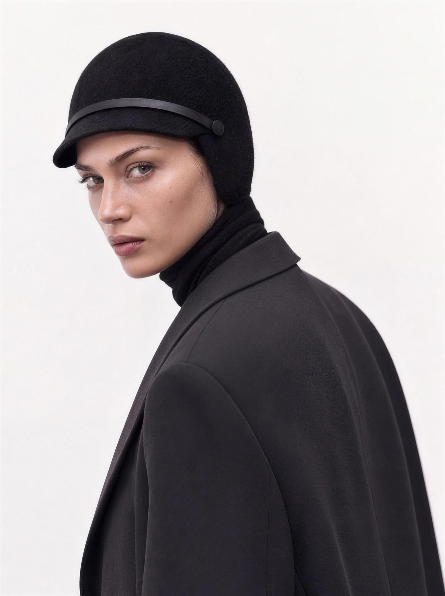
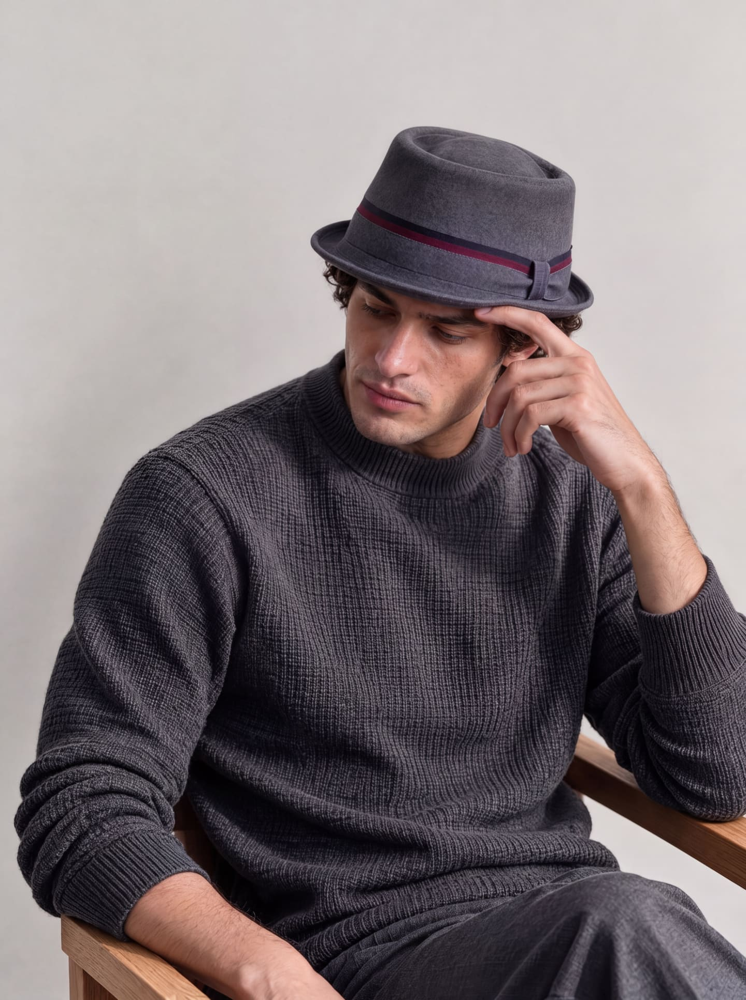
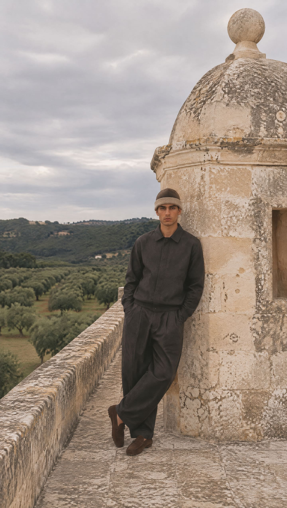
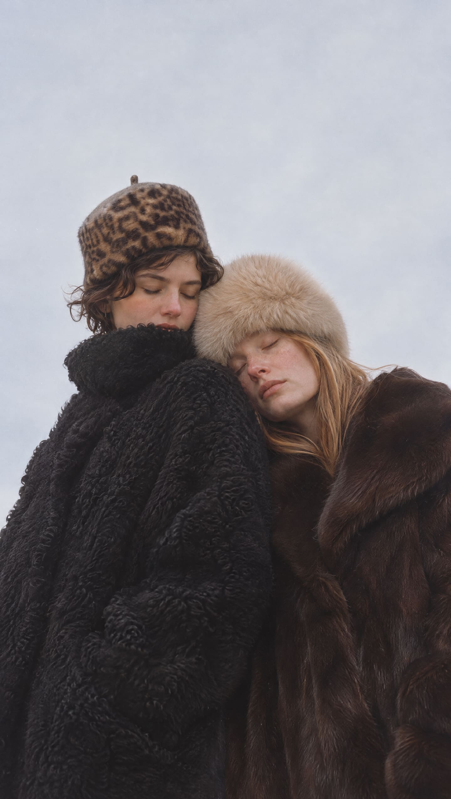
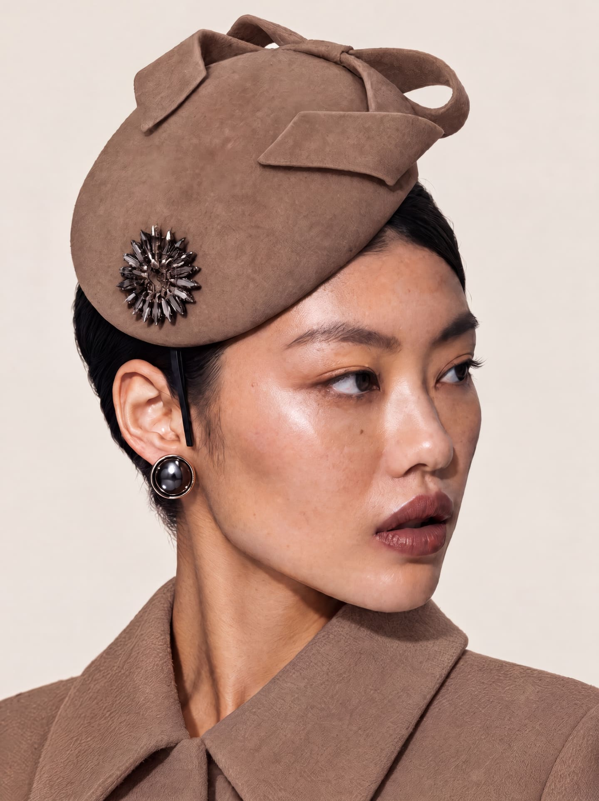
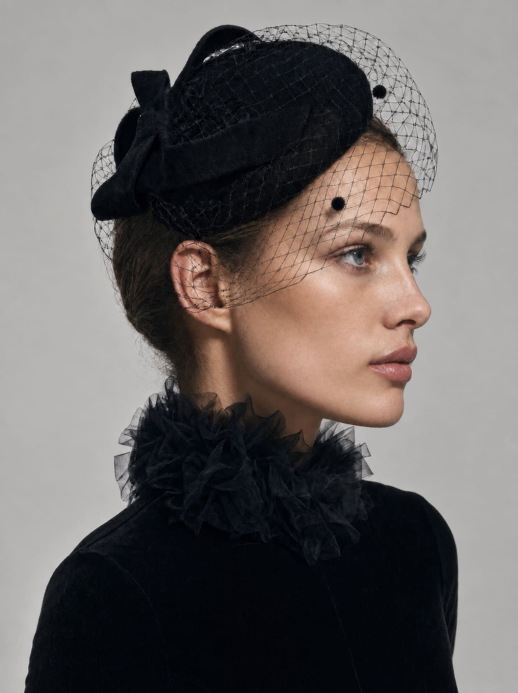
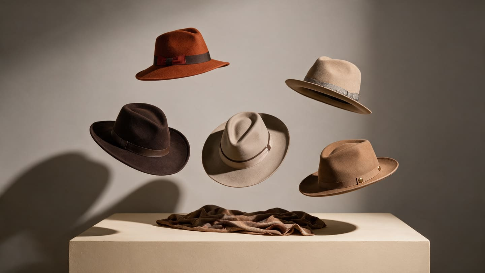
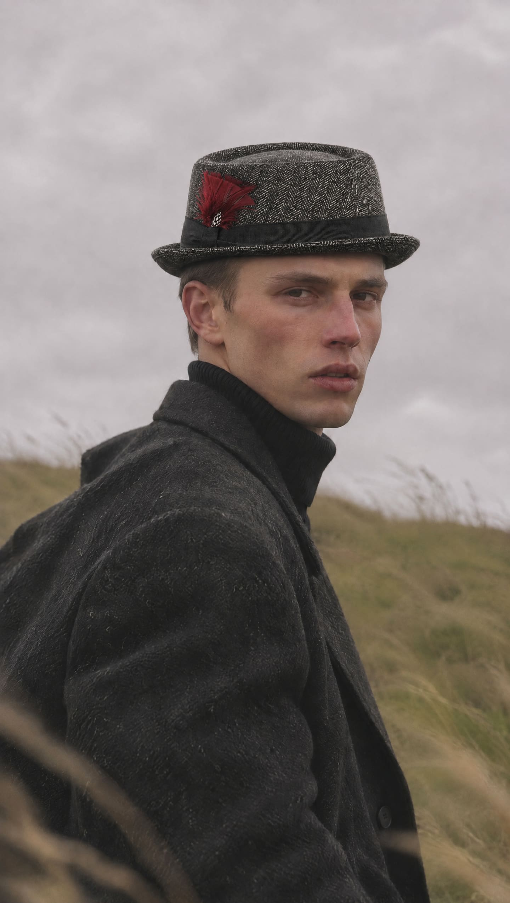
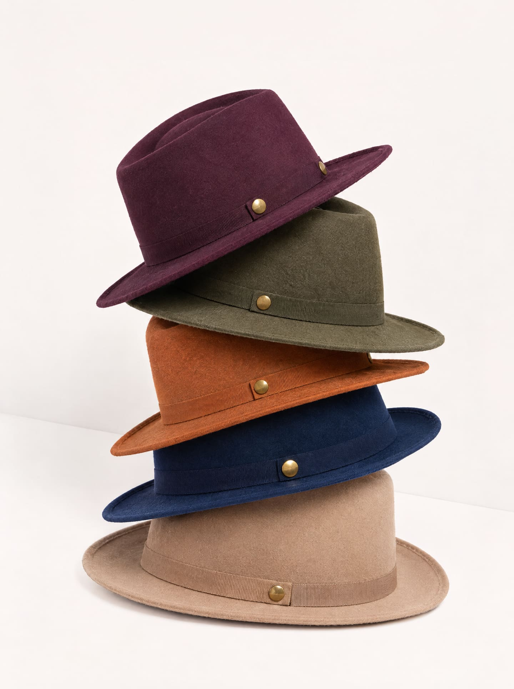

Entroterra
FW27 CAMPAIGN
Where the sea ends
When summer leaves the coast, the eye turns inland. Pale stone, olive trees, grass bent by the wind. Colours deepen to tobacco, rust, burgundy and charcoal. Felt, tweed and wool take the place of straw: this is winter in the entroterra, the land behind the sea.
















